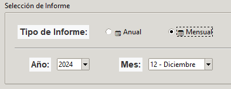
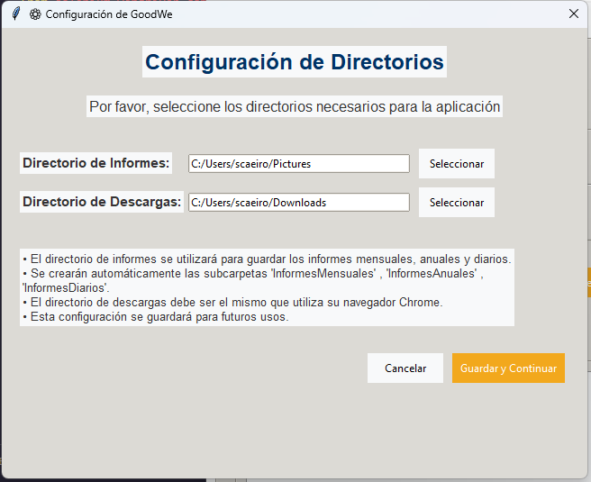
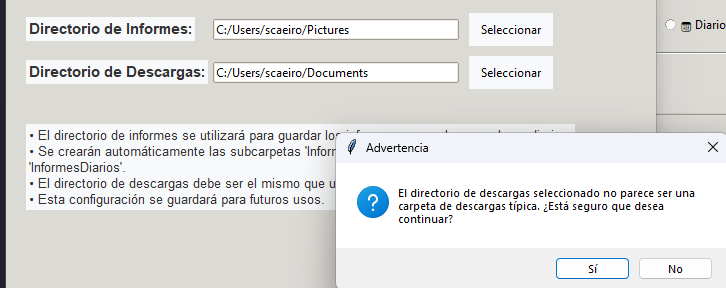
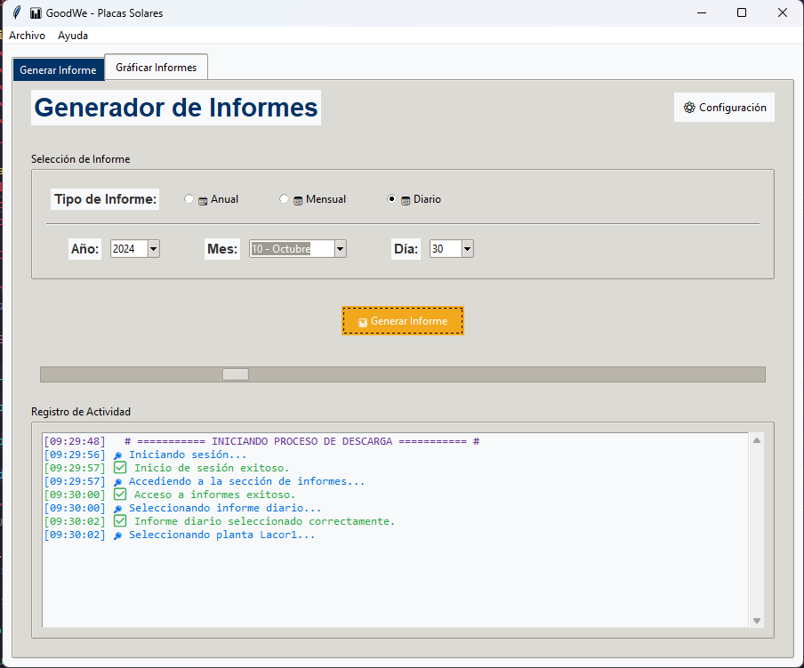
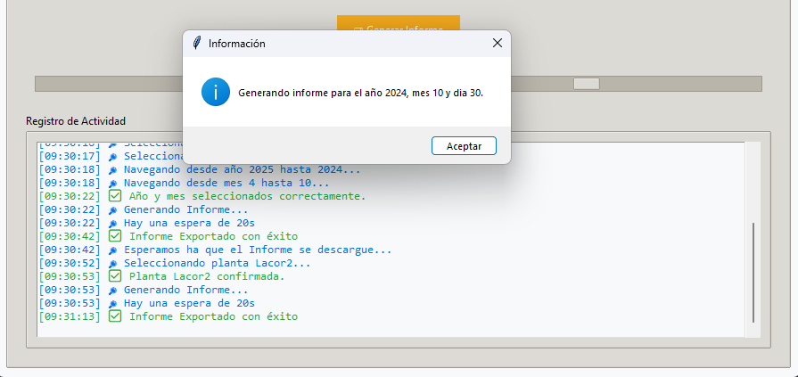
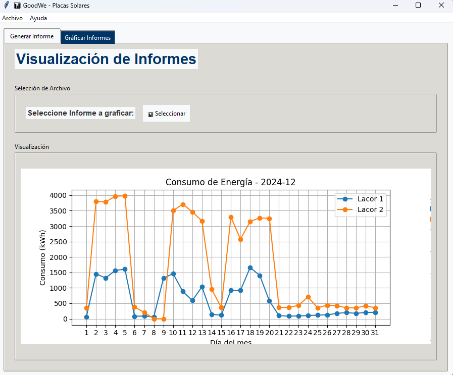
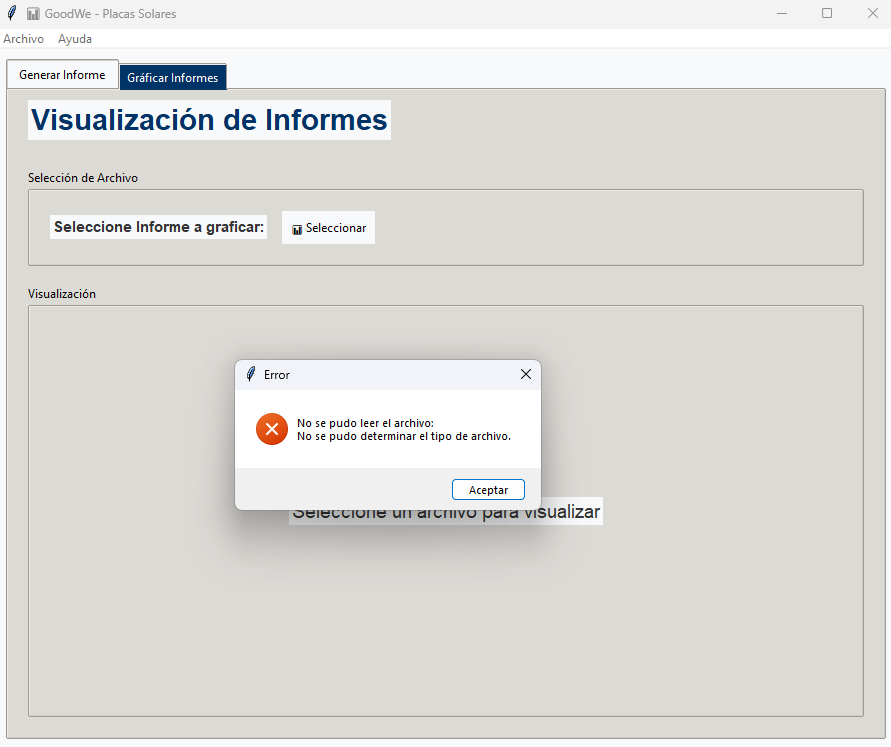

graph TD
A[Inicio] --> B{Configuración válida?}
B -->|No| C[Mostrar diálogo de configuración]
B -->|Sí| D[Mostrar interfaz principal]
D --> E[Seleccionar tipo de informe]
E --> F[Introducir parámetros temporales]
F --> G[Ejecutar scraping en background]
G --> H{Mover y renombrar archivo?}
H -->|Éxito| I[Mostrar gráfico]
H -->|Error| J[Registrar en log y notificar]
App
Desarrollo de la Aplicación de Escritorio
Arquitectura del Sistema
Para iniciar este proyecto, fue esencial entender cómo funciona el sistema de monitoreo de placas solares implementado en Lacor. El sistema actual permite el acceso a datos de consumo energético a través de una aplicación web, pero presenta limitaciones en la extracción automática de informes y su posterior análisis. La observación detallada de los datos disponibles, su formato y el método manual de extracción fueron clave para diseñar una solución eficiente que automatice este proceso.
La aplicación se estructura en tres componentes principales que interactúan para garantizar un flujo de trabajo eficiente:
1. Gestión de Configuración
Clases clave: ConfigManager, SetupDialog
Almacena rutas de directorios para informes y descargas
Persiste configuraciones entre sesiones mediante archivo TXT
Valida estructura de carpetas (InformesMensuales, InformesAnuales, InformesDiarios)
2. Núcleo de Automatización
Clases clave: GoodWeApp (métodos de scraping)
Implementa navegación web automatizada con Selenium
Maneja autenticación, selección de plantas solares y parámetros temporales
Ejecuta descargas en segundo plano con gestión de threads
3. Interfaz Gráfica
Componentes: ttk.Notebook, FigureCanvasTkAgg, ScrolledText
Sistema de pestañas para diferentes funcionalidades
Visualización interactiva de gráficos con Matplotlib
Panel de registro de actividades con colores semánticos
# Ejemplo de estructura principal
class GoodWeApp:
def __init__(self, root):
self.config_manager = ConfigManager()
self._create_notebook()
self._crear_interfaz_generar_informe()
self._crear_interfaz_graficar_informe()Funcionalidades Clave
1. Generación Automatizada de Informes
Tipos soportados:
- Diarios: Descarga paralela de dos plantas solares
- Mensuales: Consolidación en archivo único
- Anuales: Agregación de datos mensuales

Proceso optimizado:
def proceso_descarga_informes(self):
chrome_options = Options()
chrome_options.add_argument("--headless=new") # Ejecución sin UI
driver = webdriver.Chrome(service=Service(...), options=chrome_options)
# Flujo completo de navegación automatizada2. Sistema Inteligente de Gestión de Archivos
Renombrado automático según convención:
DD_MM_YYYY_Planta[1|2].xlspara diariosMM_YYYY_Planta_1_2.xlspara mensuales
Limpieza de duplicados en destino
Validación de integridad de archivos
3. Visualización Interactiva
Detección automática del tipo de informe
Gráficos temporales con resolución diaria/mensual
Personalización de ejes y leyendas
def graficar_datos_mensuales(self, df, grafica_frame, archivo):
fig, ax = plt.subplots(figsize=(10, 5))
ax.plot(df['Día'], df['Consumo(kWh)'], marker='o')
canvas = FigureCanvasTkAgg(fig, master=grafica_frame)Flujo de Trabajo del Usuario
1- Configuración Inicial
Diálogo guiado para selección de directorios
Validación de rutas típicas de descargas


2- Generación de Informes
Selección de parámetros mediante controles intuitivos
Barra de progreso indeterminada durante operaciones


3- Visualización de Datos
Selector de archivos integrado
Regeneración dinámica de gráficos


Manejo de Errores Avanzado
Sistema de logging multi-nivel:
- Registro en interfaz y archivo simultáneo
- Codificación por colores y emojis
- Salida formateada para diagnósticodef log(self, mensaje, tipo="info"):
emoji_map = {"success": "‚úÖ", "error": "‚ùå", "path": "üìÇ"}
self.log_text.insert(tk.END, f"[{timestamp}] {emoji} {mensaje}\n")Mecanismos de recuperación:
- Reintentos automáticos en fallos de conexión
- Validación de formatos de fecha
- Manejo de timeouts en elementos dinámicos
Procesamiento de Datos
- Detección automática de encabezados en Excel
- Normalización de nombres de plantas
- Manejo de valores faltantes y outliers